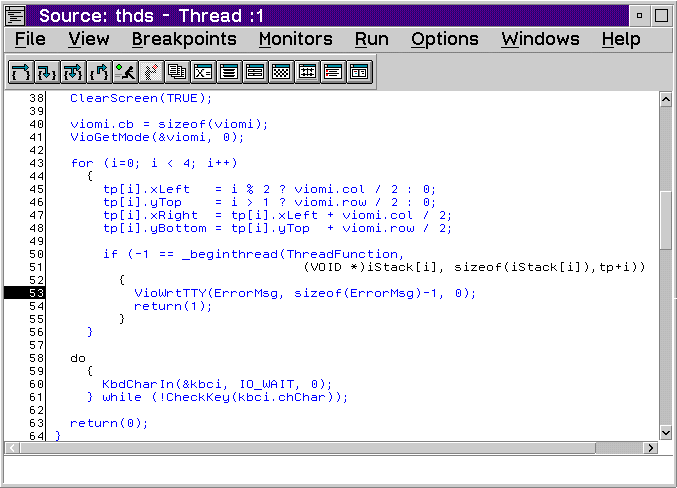
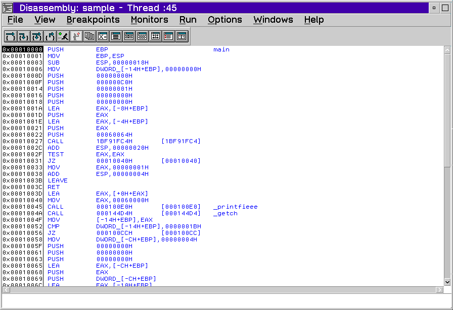
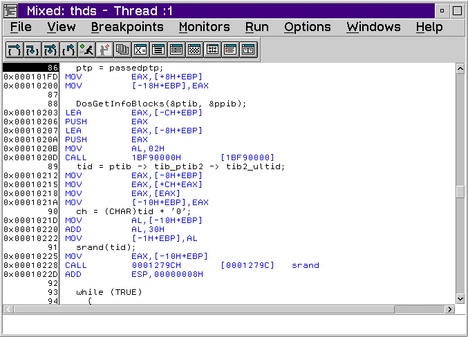

A source window allows you to view the program you are debugging. You can look at your source in one of the following windows:
A source window is thread specific. Executable lines initially display in blue, and non-executable lines initially display in black. Lines with breakpoints have a red prefix, and lines with disabled breakpoints have a green prefix.
The Source window displays the source code for the current function of the program being debugged. If source is available, the Source window displays with the Debug Session Control window when the debugging session starts. Otherwise, the Disassembly window displays.
The Disassembly window displays the assembler instructions for your program without symbolic information.
The Mixed window displays your program as follows:
Note: The Mixed window cannot be opened if the source code is not available.